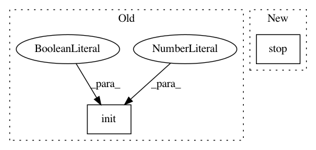

4fd8977eafd658056c92ffa6294027e77cdc46c0,rllib/tests/test_rollout_worker.py,TestRolloutWorker,test_metrics,#TestRolloutWorker#,340
Before Change
def test_metrics(self):
// Allow for Unittest run.
ray.init(num_cpus=5, ignore_reinit_error=True)
ev = RolloutWorker(
env_creator=lambda _: MockEnv(episode_length=10),
policy=MockPolicy,
batch_mode="complete_episodes")
After Change
result = collect_metrics(ev, [remote_ev])
self.assertEqual(result["episodes_this_iter"], 20)
self.assertEqual(result["episode_reward_mean"], 10)
ev.stop()
def test_async(self):
ev = RolloutWorker(
env_creator=lambda _: gym.make("CartPole-v0"),
In pattern: SUPERPATTERN
Frequency: 3
Non-data size: 2
Instances
Project Name: ray-project/ray
Commit Name: 4fd8977eafd658056c92ffa6294027e77cdc46c0
Time: 2020-06-25
Author: sven@anyscale.io
File Name: rllib/tests/test_rollout_worker.py
Class Name: TestRolloutWorker
Method Name: test_metrics
Project Name: ray-project/ray
Commit Name: 4fd8977eafd658056c92ffa6294027e77cdc46c0
Time: 2020-06-25
Author: sven@anyscale.io
File Name: rllib/tests/test_rollout_worker.py
Class Name: TestRolloutWorker
Method Name: test_no_step_on_init
Project Name: ray-project/ray
Commit Name: 4fd8977eafd658056c92ffa6294027e77cdc46c0
Time: 2020-06-25
Author: sven@anyscale.io
File Name: rllib/tests/test_rollout_worker.py
Class Name: TestRolloutWorker
Method Name: test_query_evaluators